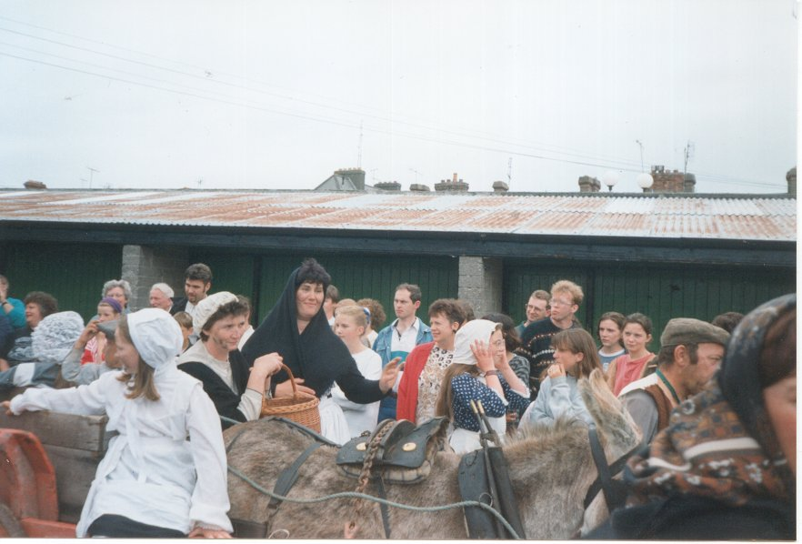

Outreach Program
The outreach program aims to bring the arts to areas of the county, which would otherwise have no access to them. This involves going into schools and the communities and getting the children involved in acting, writing, music and other areas of the arts. The outreach program will also co-ordinate and promote events in theatres and public places in towns and villages throughout the county and will act as a support for groups and individuals already producing.

Cappawhite Street Theatre Group performing in Clonmel